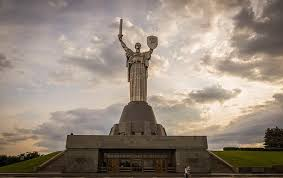

Хронологічна таблиця
2000-ні
1994–99 — перше президентство Кучми (друге 1999–2004).
2000 — «Кучмагейт». Касетний скандал. Справа Ґонґадзе.
2008 — НАТО — ні! у Верховній Раді України.
2008 — перемовини мирного врегулювання війни у Грузії між Росією (Медведєв) і ЄС (Саркозі, Франція), що передбачали відведення військ з Абхазії. Російською стороною домовленості не виконано[1].
2010 — феномен «тушок» в українському парламентаризмі.
2010-ті
2013 — Угода про асоціацію між Україною та ЄС не була підписана, як вказано з погляду влади, за невигідних економічних, для України, міркувань
2013–14 — Єврореволюція в Україні.
2014 — на довиборах до Верховної Ради, попередньо оголошених опозицією, «п'яти проблемних округах», лише по одному переміг опозиційний кандидат. Застосовувалось відверте вальшування, вманіпуляції та відкрита агітація у день голосування; оформлення «агітаторів» та видача грошей за списками була задокументована активістами.
2014 — «Ручне» голосування диктаторсько-«екстремістських» законів на чолі з Олійнком-Колесніченком. Явище парламентаризму, органічно пов'язане з «тушками».
2014 — після відсторонення у парламенті Президента Українии В. Януковича, в. о. Президента обрано Петра Олексійовича Порошенка.